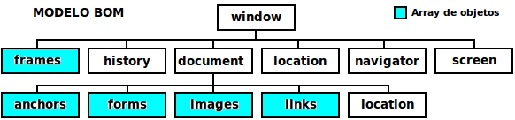

Objeto window
Modelo BOM
Objeto window
Frames
Modelo BOM
BOM, de Browser Object Model o modelo de objeto
navegador, permite acceder y modificar las propiedades de las ventanas
del navegador. Este modelo permite realizar diversas acciones sobre los
elementos de una página HTML, por ejemplo, redimensionar y mover la
ventana del navegador, modificar el texto que se muestra en los
controles HTML, cambiar el contenido de las propiedades de los objetos
del modelo, etc.
Este modelo, a diferencia del modelo DOM, no está
totalmente estandarizado entre los navegadores, aunque existan muchos
puntos en común. Es un modelo jerárquico cuya estructura es la
siguiente:

Objeto window
El objeto principal del modelo BOM es el objeto
window, que es el objeto de nivel superior dentro de la jerarquía de
una página HTML. La notación de objetos permite referirse a los
subobjetos del objeto window sin necesidad de incluir el prefijo
window. Así, las dos instrucciones siguientes son similares:
window.document.write("OK");
document.write("OK");
Métodos del objeto
window
Como métodos del objeto window están:
- focus() .- permite forzar el foco de la ventana.
- clearInterval .- detiene la ejecución de un proceso con
temporizador definido previamente con setInterval().
- clearTimeout() .- suspende el temporizador iniciado con
setTimeout().
- blur() .- método inverso a focus().
- open() .- Abre una ventana con la página especificada.
- close() .- cierra la ventana del navegador. No requiere
confirmación si la ventana se abrió con el método open() de JavaScript.
- home() .- abre la página de inicio del visitante desde nuestro
sitio web.
- print() .- imprime la ventana vigente abriendo previamente la
ventana de diálogo de la impresora.
- scrollTo() .- desplaza el contenido de la ventana a la posición horizontal y vertical (valores
absolutos).
- scrollBy() .- desplaza el contenido de la ventana a la posición horizontal y vertical (valores
relativos a la posición actual).
- resizeTo() .- redimensiona la ventana con valores fijos.
- resizeBy() .- redimensiona la ventana con valores relativos a los
actuales.
- moveTo() .- mueve la ventana a las coordenadas especificadas.
- moveBy() .- mueve la ventana segun valores relativos a la
posición actual.
- setInterval() .- inicia un proceso que se repite con la
frecuencia especificada en milisegundos.
- setTimeout() .- el proceso se realiza cuando pase el tiempo
especificado en milisegundos.
- stop() .- detiene la carga de la página.
Métodos auxiliares para cuadros de diálogo
El objeto window posee una serie de métodos
complementarios que permiten la creación de distintos tipos de cuadros
de diálogo:
- alert() .- genera un cuadro con un mensaje y sin ningún valor de retorno.
- confirm() .- genera un cuadro de diálogo con un icono de pregunta
y con los botones "Aceptar" y "Cancelar" que permiten devolver true o
false respectivamente.
- prompt() .- presenta un cuadro de diálogo de entrada de datos.
Devuelve el valor introducido o null si se pulsa el botón Cancelar o se
cierra el cuadro de diálogo.
Propiedades del
objeto window
Las propiedades del objeto window, que no son
subobjetos, son las siguientes:
- closed.- valor booleano que indica si la ventana está cerrada.
- defaultStatus.- texto que se muestra por defecto en la barra de
estado cuando no se está realizando ninguna acción.
- name.- contiene el nombre de la ventana.
- innerWidth.- ancho interno de la ventana (disponible en Netscape y
Firefox).
- innerHeight.- altura interna de la ventana (disponible ...).
- outerWidth.- ancho externo de la ventana (...).
- outerHeight.- altura externa de la ventana (...).
- screenLeft.- indica la posición del margen izquierdo de la
pantalla (IE).
- screenX.- idem para Netscape y Firefox.
- screenTop.- indica la posición del margen superior de la pantalla
(IE).
- screenY.- idem para Netscape y Firefox.
- status.- texto que aparece en la barra de estado.
Objeto navigator
El objeto navigator, subobjeto de window, suministra
información del navegador en uso. Las propiedades del navegador vigente
pueden conocerse con un código como el siguiente:
for (variable in window.navigator) {
document.write(variable + " --> " + window.navigator[variable] +
"<br>");
}
Las propiedades del objeto navigator son de solo lectura y contienen la siguiente información:
-
appCodeName.- nombre de código de la aplicación.
-
appName.- nombre del navegador (lo identifica).
-
appVersion.- versión del navegador.
-
appMinorVersion.- versión menor de la aplicación.
-
cpuClass.- tipo de procesador.
-
platform.- tipo de sistema.
- plugins.- lista de complementos instalados. IE devuelve una lista
vacía. Al ser una matriz de valores se puede obtener la lista
recorriendo sus elementos hasta window.navigator.plugins.length.
- userProfile.- perfil del usuario.
- systemLanguage.- en IE, idioma del sistema. En otros navegadores se utiliza la propiedad language.
- userLanguage.- en IE, idioma del navegador. En otros navegadores se utiliza la propiedad language.
- userAgent.- cadena descriptiva completa del navegador.
- onLine.- valor booleano que indica el estado de conexión del navegador.
- coockieEnabled.- valor booleano que indica si se aceptan ficheros cookie.
- mimeTypes.- tabla de tipos de archivo MIME aceptados por el
navegador. IE devuelve un elemento vacío. La lista se puede obtener
recorriendo los elementos de la tabla hasta
window.navigator.mimeTypes.length.
Aunque las diferentes propiedades pueden no tener la
información esperada en los distintos navegadores, existe homogeneidad
frente a las siguientes: appCodeName, appName, appVersion, userAgent,
language y platform.
Objeto screen
El objeto screen contiene la información relacionada
con la capacidad física de la pantalla: resolución y color. Sus
propiedades son:
- width.- ancho total en pixeles.
- height.- altura total en pixeles.
- availWidth.- ancho disponible en pixeles. No se tienen en cuenta las barras.
- availHeigth.- altura disponible en pixeles. No se tienen en cuenta las barras.
- colorDepth.- profundidad del color. La cantidad de colores es el resultado de elevar 2 a la profundidad de color.
Objeto location
Las propiedades del objeto location contienen información relativa a la dirección de la página actual:
- hostname.- nombre del dominio.
- href.- dirección completa de la página.
- hash.- referencia que recibió el click en la página.
- pathname.- ruta de acceso a la página sin el nombre del dominio.
- port.- número de puerto.
- protocol.- tipo de protocolo de la conexión.
- search.- cadena compuesta por los parámetros de la página.
La propiedad search contiene la cadena de caracteres
de los parámetros de la página, es decir, lo que aparece en la
dirección de la página después del carácter ?, que tiene la forma
nombre=valor, con el caracter & para separar los parámetros. Podría
crearse una función encargada de separar los parámetros y sus valores.
La propiedad href permite realizar un redireccionamiento de forma simple:
...
window.location.href = "http://www.tiernogalvan.es";
...
El objeto location tiene dos métodos:
- reload() .- recarga la página vigente. Es equivalente a pulsar la opción Actualizar del navegador.
- replace() .- carga otra página cuya dirección se pasa como parámetro.
Objeto history
El objeto history posee métodos y propiedades que permiten acceder al historial de páginas visitadas:
- back() .- accede a la página anterior. Similar a pulsar la opción Atrás.
- forward() .- accede a la página siguiente. Similar a pulsar la opción Siguiente.
- go() .- permite acceder a una página concreta del historial
mediante un salto especificado como parámetro mediante un número
positivo o negativo. Por ejemplo, para retroceder dos páginas sería:
go(-2).
- length.- propiedad que indica el número de páginas registradas en el historial.
Ejemplos sencillos para acceder a la página anterior mediante el uso de los métodos go() y back() serían:
...
<a href="javascript:window.history.back()">Página anterior</a>
...
<input type=button value="Atrás" onclick="history.go(-1)">
...
Cambiar el tamaño de una ventana
JavaScript tiene dos métodos que permiten modificar
el tamaño de la ventana. El método resizeTo() cambia las dimensiones de
la ventana con valores definidos en pixeles con una sintaxis como la
siguiente:
resizeTo(pAncho, pAlto);
Otro modo para cambiar el tamaño es mediante el
método resizeBy() que utiliza como parámetros pAncho y pAlto, pero en
este caso estos parámetros se utilizan para modificar los valores
vigentes del tamaño de la pantalla. Si los parámetros son negativos el
tamaño se reduce. Un cero en uno de los dos parámetros significa que la
dimensión correspondiente no se modifica. La sintaxis es:
resizeBy(pAncho, pAlto);
Para modificar el tamaño y hacer que ocupe toda la
pantalla debe obtenerse el tamaño máximo de la pantalla a partir del
objeto screen y utilizar esos valores como parámetros del método
resizeTo():
resizeTo(screen.availWidth, screen.availHeight);
Cambiar la posición de una ventana
JavaScript permite mover la pantalla de modo
absoluto (moveTo()) o relativo a la posición vigente (moveBy())
expresando los parámetros en pixeles. El valor 0,0 corresponde a la
esquina superior izquierda de la ventana. La sintaxis de ambos métodos
es la siguiente:
moveTo(pX, pY);
moveBy(desplX, desplY);
Con moveBy() pueden utilizarse parámetros negativos, cero o positivos.
Para obtener la posición de la pantalla, IE dispone
de las propiedades screenLeft y screenTop y Firefox/Netscape de las
propiedades screenX y screenY. Dichas propiedades del objeto window son
de solo lectura y no pueden utilizarse para modificar la posición de la
pantalla.
Imprimir la pantalla
El método print() del objeto window abre un cuadro
de diálogo de impresión para seleccionar la impresora, ajustar la
configuración y seleccionar el número de páginas y de copias. Un
ejemplo puede ser:
<a href="javascript: window.print()">Imprimir la ventana</a>
Ventanas emergentes (popups)
Las ventanas emergentes suelen tener un tamaño
reducido y se abren automáticamente a partir de alguna acción del
usuario. Su uso es muy variado, para añadir ayudas de contexto, para
abrir una imagen, para mostrar un mensaje, etc.
El método open() del objeto window permite abrir una ventana popup:
var winpopup = window.open(popUrl, popNombre, popOpcion)
donde:
- popUrl.- es la dirección URL de la ventana popup.
- popNombre.- es el nombre de la ventana.
- popOpcion.- es la cadena de caracteres que contiene una lista de
opciones de apertura de la ventana. Las opciones se codifican siguiendo
el formato: opcion1=valor1, opcion2=valor2, ... La coma actua como
separador entre las opciones.
Las opciones de apertura son las siguientes:
- directories: valor yes/no. Añade o no una barra de links.
- menubar: valor yes/no. Añade o no una barra de menús.
- status: valor yes/no. Añade o no una barra de estado.
- location: valor yes/no. Añade o no una barra de direcciones.
- scrollbars: valor yes/no/auto. Añade o no las barras de desplazamiento.
- resizable: valor yes/no. Permite o no el redimensionamiento.
- height: altura en pixeles.
- width: ancho en pixeles.
- left: posicionamiento del margen izquierdo.
- top: posicionamiento del margen superior.
- fullscreen: valor yes/no. Pantalla completa o no, solo en IE.
Comunicación entre ventanas
Cuando se utiliza el método open() para abrir una
ventana se obtiene, como retorno de la función, un objeto de tipo
window; esta variable permite posteriormente la comunicación entre las
ventanas, por ejemplo, con la ventana popup abierta.
Ver ejemplo de la pág. 482.
El objeto opener
El objeto opener es un subobjeto de window que da
acceso a la ventana padre (ventana desde la que se abrió la ventana
vigente). Al acceder a ese objeto se puede trabajar sobre el objeto
document, que permite acceder a toda la página.
Ver ejemplo de pag. 482.
Precaución al usar popups
Dado que los popups se utilizan con frecuencia para
incluir anuncios publicitarios no deseados, y que los navegadores
incluyen la opción de bloqueo de ventanas emergentes, debe evitarse el
uso de ventanas emergentes para los tratamientos importantes del sitio
web.
Frames
Los frames permiten realizar una subdivisión de la
página. Las etiquetas HTML que permiten la creación de frames son
<frameset> y <frame>. Desde el punto de vista de
JavaScript, puede establecerse comunicación entre los distintos frames
pues son elementos que dependen del objeto window.
Con código HTML una página con tres frames, dos
dentro de un frameset y otro en otro frameset, podría tener la forma:
<frameset>
<frameset>
<frame name="frame11" src="frame11.html">
<frame name="frame12" src="frame12.html">
</frameset>
<frame name="frame21" src="frame21.html">
</frameset>
y para cargar una página en uno de los frames se utilizaría una instrucción como la siguiente:
<a href="pagina.html" target="frame12">Cambiar frame</a>
Con el atributo target puede especificarse el frame
donde se visualizará la página pero también admite los valores:
- _parent .- identifica el área definida por la etiqueta frameset.
- _top .- identifica el nivel principal y se reemplazará toda la definición de frames de la página vigente.
- _blank .- identifica una página nueva.
Con JavaScript también se puede direccionar a un frame utilizando los objetos parent o top de la forma:
parent.frames["frame21"].window.location.href="pagina.html";
top.frames["frame21"].window.location.href="pagina.html";
Esta sintaxis permite cambiar un frame por otro.
El objeto parent representa a la ventana definida
por la etiqueta <frameset> de nivel superior y la matriz de
frames contiene la lista de frames contenidos en ese frameset. La
propiedad window.location.href permite definir la página que se
incluirá en el frame referenciado, en este caso frame21.
El objeto top representa la ventana de nivel más
alto, por lo que podemos utilizar este objeto para cargar una página en
el frame frame21 desde frame11; frame11 pertenece a otro frameset por
lo que para acceder a frame21 hay que utilizar el camino del objeto top
pues por el objeto parent no lo encontraríamos.
Toda la información de un frame es accesible desde
cualquier otro frame, por ejemplo, la definición de una función. Esto
es posible pero teniendo en cuenta ciertas limitaciones desarrolladas
por razones de seguridad: dos frames pueden comunicarse si pertenecen
al mismo dominio. Es el navegador el que prohibe el acceso a los datos
de otro frame de un dominio diferente.
Etiqueta iframe
Los frames definidos mediante la etiqueta
<iframe> suelen utilizarse para definir áreas de anuncios. Su
ventaja es que la carga de la página no se retrasa por el contenido de
la etiqueta iframe. Un ejemplo de uso sería:
<iframe src="http://www.dominio.es/pagina.html" ... </iframe>
La alternativa con código JavaScript sería:
<script language="javascript" src="http://www.dominio.es/anuncio.js"></script>
El archivo anuncio.js contiene las instrucciones
JavaScript para el anuncio publicitario; el inconveniente de este
enfoque es que un problema en la carga de este archivo afecta al resto
de la página.